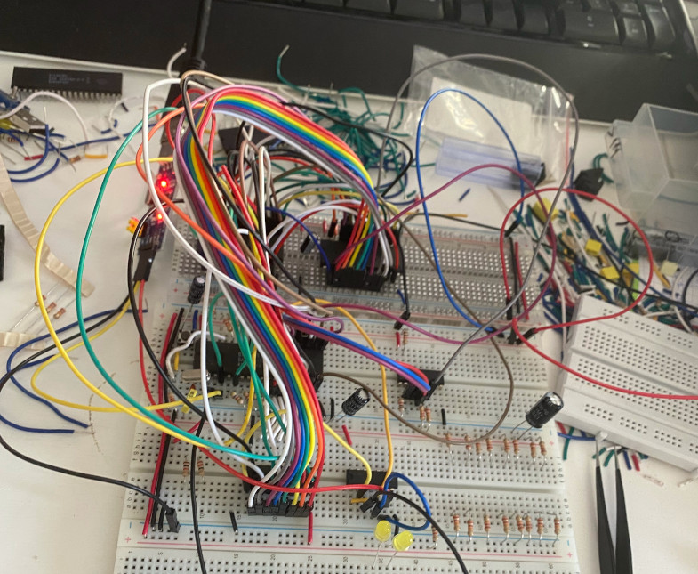

W poprzednim wpisie udało nam się zbudować działający minikomputer oraz uruchomić na nim napisany przez Davida Huntera monitor. Dla przypomnienia zbudowana przeze mnie maszyna wyglądała następująco:  Podczas kilku kolejnych godzin pracy z komputerem, szybko okazało się że taka plątanina przewodów znacznie utrudnia debugowanie i rozwiązywanie problemów. Co gorsza przewody połączeniowe nie zapewniały dobrej jakości połączeń pomiędzy układami scalonymi. W efekcie komputer potrafił nie startować lub zawieszał się podczas wykonywania programów.
Kolejną ważną rzeczą którą pominąłem podczas budowy komputera są kondensatory odsprzęgające (ang. decoupling capacitors). Układy scalone, zwłaszcza te należące do rodziny 74LS potrafią emitować sporo zakłóceń podczas zmiany stanu. Dołączenie kondensatora foliowego lub ceramicznego o pojemności 0.1uF do linii zasilania układu pozwala zmniejszyć zakłócenia i poprawia stabilność jego działania.
Teraz nadszedł czas żeby naprawić wszystkie powyższe mankamenty. Przewody połączeniowe zastąpiłem ciętymi na wymiar przewodami jednożyłowymi. Oprócz kondensatorów odsprzęgających, dodałem do szyny zasilania również jeden duży kondensator elektrolityczny o znacznej pojemności (470uF). Generalnie dokładanie tak dużych kondensatorów nie jest zalecane bo potrafi mocno obciążyć zasilacz w momencie startu układu. Ja używam prostego zasilacza do płytek stykowych który przeżył już niejedno zwarcie, więc na razie postanowiłem zignorować ten problem. Efekt mojej pracy widać poniżej:
Przy okazji przebudowy komputera postanowiłem wprowadzić kilka modyfikacji. Po pierwsze zastąpiłem pojedyńczy rejestr wejścia/wyjścia z projektu Huntera, dwoma rejestrami wyjściowymi i jednym wejściowym. Dzięki temu w prosty sposób będziemy mogli podłączyć do komputera zarówno 2x16 znakowy wyświetlacz LCD, jak i parę przycisków.
Warto tutaj zaznaczyć że oryginalny projekt Huntera również pozwala na integracje z wyświetlaczem LCD, jeżeli tylko wykorzystamy rejestry przesuwne 74LS595 do zwielokrotnienia liczby wyjść. Dokładnie tą samą sztuczkę wykorzystał Ben Eater w swoim programatorze EEPROM.
Ostatecznie po wszystkich modyfikacjach schemat komputera wygląda następująco: Powyższy schemat oddaje jeden do jednego układ połączeń oraz typ układów scalonych które znalazły się na moich płytkach stykowych. Na przykład miałem pod ręką tylko jeden układ 74HCT574. Przy budowie portów wyjściowych musiałem więc wykorzystać dwa starsze układy 74HCT374, które robią co prawda to samo co 74HCT574, ale mają znacznie mnie wygodny układ wyprowadzeń. Podobnie nie posiadałem 74LS373 więc użyłem 74LS574 w połączeniu z inwerterem. Na koniec przypomnę że układy rodzin 74LS i 74HCT są ze sobą kompatybilne i można je stosować zamiennie.
Schemat minikomputera został stworzony w darmowym i popularnym wśród hobbystów programie KiCad. Podczas tworzenia schematu nie widziałem co wpisać w pole tytuł, postanowiłem więc nadać mojemu komputerowi nazwę Mikrus-85. Hurra!
Kolejny celem jaki przed sobą postawiłem była kompilacja i uruchamianie na Mikrusie programów napisanych w C. Niestety już samo znalezienie odpowiedniego kompilatora stanowiło duży problem. Small Device C Compiler mógłby być idealnym wyborem, gdyby wspierał używany przeze mnie procesor 8085. Co prawda prace nad dodaniem takiego wsparcia rozpoczęły się ponad rok temu, ale nie zaowocowały jeszcze w pełni działającym kompilatorem. Warto dodać że procesor 8085 jest wstecznie kompatybilny z procesorem 8080 (dokładnie mówiąc 8085 dodaje tylko dwie nowe instrukcje), więc kompilator C dla 8080 może być z powodzeniem wykorzystany również do generowania kodu dla 8085.
Ostatecznie postanowiłem użyć kompilatora Small-C, napisanego ponad 30 lat temu przez Chrisa Lewisa, a przywróconego do życia dzięki wysiłkom użytkownika ncb85. ncb85 oprócz kodu kompilatora udostępnił też na swoim koncie przykład jego użycia co pozwoliło mi zaoszczędzić niemało czasu.
Wracając do samego kompilatora, jest to dość stary program który powstał jeszcze przed wprowadzeniem standardu C89 (sic!). Poniżej garść ciekawostek które się z tym wiążą:
- Nie ma typu
void. Metody domyślnie zwracają typint. :deal-with-it-parrot: - Brak wsparcia dla inicjalizacji wartości zmiennych globalnych.
- Deklaracja metod musi byc wykonana w przestarzałym stylu K&R:
lcd(regSelect, data)
char regSelect;
char data;
{
// code
}Współcześnie napisalibyśmy:
void lcd(char regSelect, char data) {
// code
}Ponieważ nasz procesor jest 8-bitowy do dyspozycji mamy jedynie cztery typu liczb całkowitych:
unsigned char, signed char, unsigned int i signed int.
Operacje na 16-bitowych typach int muszą być symulowane za pomocą dostarczanej razem z kompilatorem
biblioteki crun8085lib.asm.
Sam kompilator jest bardzo prosty, nie generuje prawie żadnych ostrzeżeń - łatwo więc sobie strzelić w stopę. Dla przykładu poniższa pętla jest nieskończona:
char c;
for (c = 0; c < 128; c++) {
// do nothing
}Od czasu do czasu kompilator kończy pracę zgłaszając Segmentation Fault. Praca z Small-C wymaga więc sporej dozy i cierpliwości, i wyrozumiałości, i wytrwałości.
Stworzenie najprostszego programu w C main() { } przy użyciu Small-C wymaga
trochę więcej wysiłku niż tylko uruchomienie kompilator. W wyniku kompilacji
otrzymujemy bowiem nie plik binary, ale plik źródłowy assemblera który
należy jeszcze poddać translacji do kodu maszynowego.
Do tego celu należy wykorzystać as8085 będący częścią pakietu ASxxxx.
ASxxxx jest wciąż rozwijanym projektem posiadającym naprawdę dobrą dokumentację.
Dzięki temu zbudowanie assemblera ze źródeł nie powinno sprawić nam żadnych problemów.
Czas na małą dygresję. Po starcie procesor 8085 zaczyna
wykonywanie kodu programu od adresu 0x0000.
Wartości rejestrów procesora, w szczególności rejestru SP odpowiedzialnego
za zarządzaniem stosem nie są na starcie procesora dobrze zdefiniowane.
Zanim wywołamy naszą funkcję main() powinniśmy nadać rejestrowi SP poprawną wartość.
Zbudowany przeze mnie komputer posiada następującą mapę pamięci:
Adresy | Przeznaczenie
---------------------------------
0x0000 - 0x1FFF - ROM
0x2000 - 0x3FFF - RAM
0x8000 - output port 1
0xA000 - output port 2
0xC000 - input portStos na 8085 podobnie jak w innych procesorach Intela rośnie w dół (w kierunku mniejszych adresów).
Dodatkowo warto żeby adres stosu był parzysty, rozsądnym wyborem jest więc ustawienie SP
na adres 0x3FFE a więc przedostatni dostępny adres pamięci RAM.
Ostatecznie stworzyłem plik cstart.asm odpowiedzialny za przygotowanie
środowiska dla C:
; Run time setup for Small C.
.module CSTART
.area CSTART (REL,CON) ;program area CRTSO is RELOCATABLE
.list (err, loc, bin, eqt, cyc, lin, src, lst, md)
.nlist (pag)
.globl cstartend
lxi h,#0x3ffe ; Initialize stack on even address.
; Stack grows downwards.
sphl ; Load HL into SP
call main ; call main program
stop:
hlt ; stop processor
jmp stop ; interrupt can wake CPU from hlt
cstartend:
.endPozostaje nam już tylko upewnić się że kod z pliku cstart.asm wyląduje pod
adresem 0x0000. Do tego celu musimy 1) nadać mu unikalną nazwę CSTART
2) wykorzystać parametr linkera -b żeby wymusić pozycje obszaru CSTART
w pamięci EEPROM.
Poniżej przedstawiam parametry linkera (plik eeprom.lnk):
-ioux
eeprom-img
cstart
main
-b CSTART=0
-b SMALLC_GENERATED=0+cstartend
-eZauważmy że kod w pliku cstart.asm kończy się deklaracją labelki cstartend.
Labelkę to wykorzystujemy żeby zmusić linker to umieszczenia kodu wygenerowanego
przez Small-C (SMALLC_GENERATED) zaraz po kodzie sekcji CSTART.
Jeżeli zaczniemy pisać bardziej skomplikowane programy w C to może się okazać
że nasz program wymaga funkcji, znajdujących się we wspomnianej już przeze mnie
bibliotece crun8085lib.asm. Na chwilę obecną po prostu kopiuje brakujące funkcje
do pliku cstart.asm, postaram się to poprawić w kolejnym wpisie.
Ostatecznie wynikiem kompilacji i linkowania jest plik w formacie Intel HEX który możemy już wypalić w pamięci EEPROM.
W trakcie zabawy z Mikrusem przygotowałem prosty program który wypisuje wiadomość na ekran LCD oraz pozwala na obsługę dwóch przycisków:
Na koniec zagadka dla czytelników: W tej chwili Small-C nie pozwala nam wykorzystać zmiennych globalnych. Odczyt zmiennych jest co prawda możliwy ale zapisy do zmiennych zdają się “znikać”? Dlaczego tak się dzieje?
W następnym wpisie postaram się to naprawić. Koniec części drugiej.